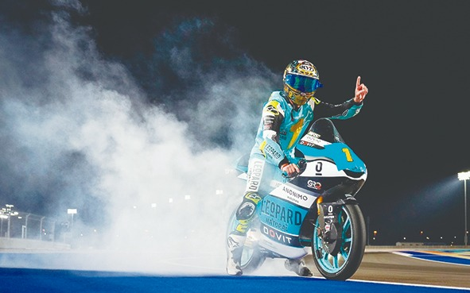

Header
O Campeonato Mundial de Motovelocidade (oficialmente: FIM Road Racing World Championship Grand Prix), mais conhecido pelo nome de sua categoria principal MotoGP, é a categoria máxima do Motociclismo e o mais antigo Campeonato do Mundo de desportos motorizados – o primeiro ano de competição teve lugar em 1949. O evento, também conhecido como Campeonato Mundial de Velocidade, é regido pela Federação Internacional de Motociclismo (FIM) e é dividido em três categorias: MotoGP, Moto2 e Moto3. As motocicletas são construídas exclusivamente para esta competição, não para comercialização junto do público; isso é diferente de outros campeonatos que utilizam motos de série, como a Superbike.
O primeiro mundial GP foi organizado pela Federação Internacional de Motociclismo (FIM) em 1949, e seu potencial econômico óbvio não passou despercebido desde então. Os direitos comerciais do campeonato atualmente pertencem a Dorna Sports. Em 2002, a MotoGP substitui a categoria de 500cc, permitindo o uso de motocicletas de 990cc 4-tempos e 500cc 2-tempos. Em 2007, a MotoGP se restringe a motos de 800cc, e em 2012, aumenta para 1000cc. Em 2010, a Moto2 passa a ser a categoria intermediária, com motores 4-tempos de 600cc; e em 2012, a Moto3 substitui a categoria de 125cc, com motores 4-tempos de 250cc.
É a principal categoria do campeonato, onde competem as motocicletas de maiores cilindradas. Desde meados de dos anos de 1970 até o ano de 2002, a categoria permitia uma cilindrada de 500cc independentemente do fato de o motor ter dois ou quatro tempos. Devido a isto, todos os motores eram de dois tempos graças à sua maior entrega de potência para um mesmo deslocamento.

Em 2002 mudaram as regras para facilitar o salto para as de quatro tempos, provavelmente influenciados pela baixa participação de mercado de rua das motos de dois tempos. As novas regras permitiram aos construtores escolher entre motociclestas de dois tempos (500cc ou menos) e motocicletas de quatro tempos (990cc ou menos).